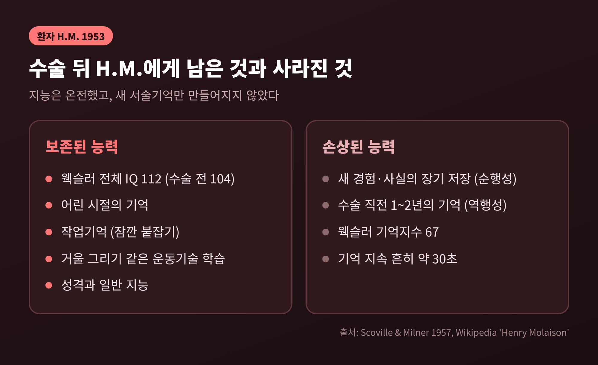
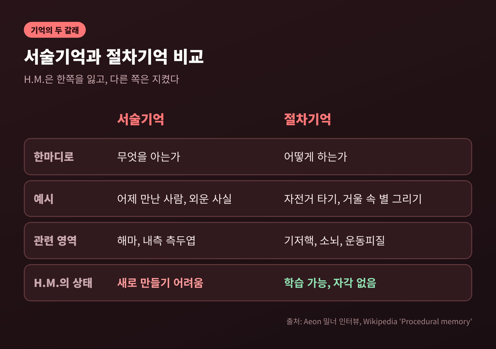
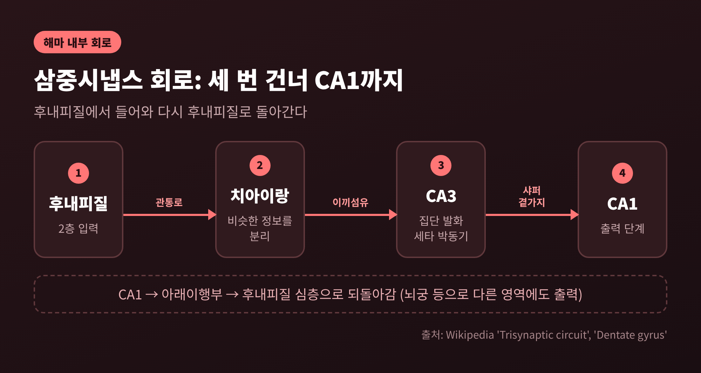
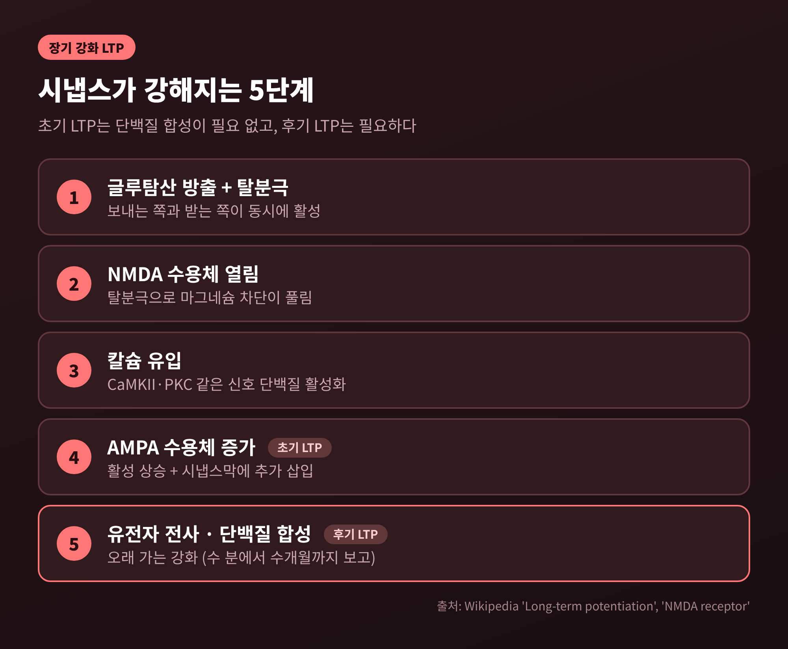
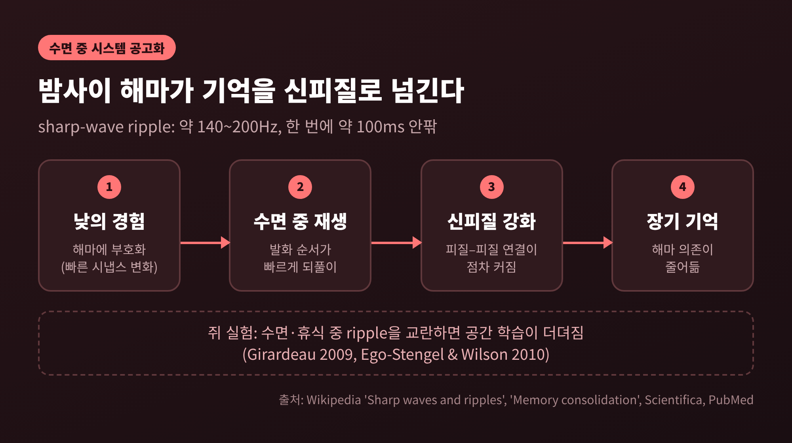
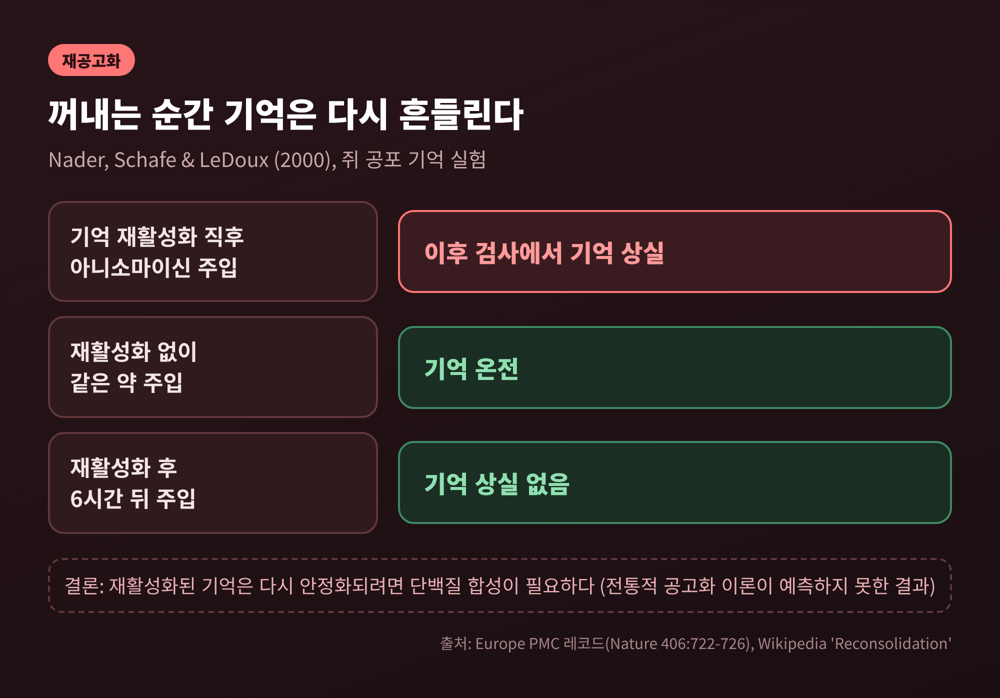

해마와 기억 공고화 — H.M. 사례로 보는 기억이 저장되는 과정

3줄 요약
1. 해마는 새 경험을 서술기억으로 묶어 두는 임시 저장소 역할을 하며, 환자 H.M.의 사례가 이를 처음 분명하게 보여 주었습니다.
2. 기억은 해마 안의 회로와 시냅스 강화(LTP)로 만들어지고, 수면 중 해마의 재생(sharp-wave ripple)을 거쳐 신피질로 옮겨 가며 굳습니다.
3. 한번 굳은 기억도 꺼낼 때마다 잠시 불안정해졌다가 다시 저장된다는 것이 재공고화 개념입니다.
오늘은 해마가 기억을 어떻게 만들고 굳히는지 정리해 보려 합니다.
출발점은 1953년의 수술 한 건이고, 도착점은 우리가 매일 밤 잠자는 동안 일어나는 일입니다.
교양 수준의 설명이며, 의학적 판단이나 조언을 담은 글은 아닙니다.
■ 해마와 기억 공고화, 무엇을 말하는가
해마(hippocampus)는 좌우 측두엽 안쪽에 하나씩 놓인 길이 약 5cm의 회색질 구조입니다. 해부학자들이 바다 생물인 해마(seahorse)를 닮았다고 여겨 붙은 이름입니다.
기억 공고화(consolidation)는 방금 만들어진 불안정한 기억이 오래 가는 기억으로 굳어지는 과정을 가리킵니다.
위키백과의 정리에 따르면 공고화는 두 층위로 나뉩니다. 하나는 학습 후 수 분에서 수 시간 안에 개별 시냅스에서 일어나는 시냅스 공고화입니다. 다른 하나는 해마에 기대던 기억이 피질 쪽으로 점차 옮겨 가는 시스템 공고화로, 수일에서 수년에 걸친다고 서술됩니다.
이 글은 그 두 층위를 환자 한 사람의 이야기에서 시작해 차례로 따라가 보겠습니다.
■ 1953년, 환자 H.M.이 남긴 질문
헨리 몰레이슨은 10세 무렵부터 경미한 발작을, 16세 이후에는 대발작을 겪었습니다. 약을 써도 27세에는 일을 할 수 없는 상태였습니다.
1953년 9월 1일, 외과의 윌리엄 스코빌은 그의 양쪽 내측 측두엽을 절제했습니다. 해마의 앞쪽 부분과 후내피질, 편도체 대부분이 함께 제거되었습니다.
발작은 줄었습니다. 대신 새로운 기억이 만들어지지 않았습니다.
1957년 스코빌과 브렌다 밀너가 발표한 논문에 따르면 수술 뒤에도 그의 지능은 온전했습니다. 웩슬러 전체 IQ는 112였고, 수술 이전의 104보다 오히려 높았습니다. 반면 웩슬러 기억지수는 67에 그쳤습니다.
어린 시절의 기억은 대체로 남아 있었고, 수술 직전 1~2년의 일은 대부분 떠올리지 못했습니다. 기억 지속 시간은 흔히 30초 안팎이었다고 전합니다.
밀너는 후일 인터뷰에서 이렇게 회상했습니다. 그는 매우 예의 바른 사람이어서 늘 먼저 아침 인사를 건넸지만, 상대가 누구인지는 전혀 알지 못했다고 말입니다.

■ 거울 속 별이 보여 준 서술기억과 절차기억의 분리
H.M.의 사례가 유명해진 진짜 이유는 잃은 것보다 잃지 않은 것에 있습니다.
밀너는 1960년대 초 거울 그리기 과제를 시켰습니다. 거울에 비친 별 모양의 이중 테두리만 보면서 선 사이를 따라 그리는 과제입니다. 처음에는 누구에게나 어렵습니다.
위키백과의 정리로는 H.M.이 처음에 선 밖으로 약 30회 벗어났습니다. 첫날 두 번째 시행에서 오류가 약 20회, 세 번째에 12회, 열 번째에는 5~6회로 줄었다고 합니다. 밀너는 사흘 연습 뒤에 그가 별을 완벽하게 따라 그렸다고 전합니다.
문제는 그다음입니다. 그는 전에 이 과제를 해 본 적이 있다는 사실 자체를 기억하지 못했습니다.
몸은 배웠고, 의식은 배운 적이 없다고 답한 셈입니다. 밀너는 이 결과로 기억이 하나의 체계가 아니라 여럿이라는 결론에 이르렀습니다. 운동기술 학습은 H.M.이 잃은 체계와는 다른 체계에 의존한다는 것입니다.
이 구분이 오늘날의 서술기억과 절차기억입니다. 서술기억은 '무엇을 아는가'에 해당하는 사실과 경험의 기억이고, 해마가 핵심입니다. 절차기억은 '어떻게 하는가'에 해당하는 몸의 기술로, 기저핵과 소뇌, 운동피질 등이 관여합니다.
사후 연구는 이야기를 한 겹 더 입혔습니다. 2009년 12월 자코포 아네세 연구진이 53시간 동안 그의 뇌를 70마이크로미터 간격으로 촬영해 2,401장의 이미지를 얻었습니다. 2014년 보고에 따르면 남은 해마 조직은 왼쪽 2.02㎤, 오른쪽 1.96㎤였고 CA1~CA4의 신경세포도 온전했습니다. 그런데 후내피질은 정상의 왼쪽 약 1.7%, 오른쪽 약 6.5%만 남았습니다. 연구진은 해마로 드나드는 길이 끊긴 것이 기억 손상에 크게 기여했을 것으로 해석합니다.
단순히 해마를 잘라서 생긴 결과로만 볼 수는 없다는 뜻이므로, 이 사례를 읽을 때는 이 한계를 함께 기억해 두시면 좋겠습니다.

■ CA3·CA1·치아이랑, 해마 안의 세 정거장
해마 안에서 정보는 일정한 순서로 흐릅니다. 삼중시냅스 회로라고 부르는 경로입니다.
먼저 후내피질 2층에서 나온 신호가 관통로를 타고 치아이랑에 닿습니다. 치아이랑의 과립세포는 이끼섬유로 CA3 피라미드세포에 신호를 넘기고, CA3는 샤퍼 곁가지를 통해 CA1에 전달합니다. CA1은 아래이행부를 거쳐 다시 후내피질로 신호를 돌려보냅니다.
치아이랑은 비슷한 정보를 서로 다른 것으로 분리하는 전처리 단계로 설명됩니다. 새 기억이 이미 저장된 비슷한 기억과 뒤섞이지 않게 하는 문지기에 가깝습니다. 이곳은 성체에서도 신경세포가 새로 만들어지는, 뇌에서 드문 부위 두 곳 중 하나입니다. 다만 성인 인간에서도 의미 있는 수준으로 일어나는지는 연구마다 결과가 갈려 논쟁이 이어지고 있습니다.
CA3는 해마 세타리듬을 만드는 박동기 역할로 소개되곤 합니다.
앞서 본 후내피질이 이 회로의 입구이자 출구라는 점을 떠올리면, H.M.의 사후 연구 결과가 왜 의미심장한지 이해가 되실 것입니다. 회로의 방은 남아 있어도 문이 닫혀 있었기 때문입니다.

■ 장기 강화(LTP), 시냅스가 기억을 붙잡는 방식
회로를 지나는 신호가 어떻게 흔적을 남길까요? 유력한 세포 수준의 설명이 장기 강화(LTP)입니다.
1966년 노르웨이의 테르예 뢰모는 마취한 토끼의 관통로를 자극하고 치아이랑에서 반응을 기록하다가, 자극 뒤에 반응이 오래 커져 있는 현상을 관찰했습니다. 1973년 블리스와 뢰모가 이를 정식으로 보고했고, 장기 강화라는 이름은 1975년에 붙었습니다. 이 강화는 수 분에서 수개월까지 이어질 수 있다고 정리됩니다.
핵심 부품은 NMDA 수용체입니다. 이 수용체는 글루탐산이 붙고 동시에 받는 세포가 충분히 흥분해 있을 때만 열립니다. 평소에는 마그네슘 이온이 통로를 막고 있다가 탈분극되면 빠져나가기 때문입니다. 통로가 열리면 칼슘이 들어와 신호가 됩니다.
'함께 발화하는 세포는 함께 연결된다'는 헵의 규칙을 분자 수준에서 구현한 장치입니다.
초기 단계에서는 기존 AMPA 수용체의 활성이 높아지고, 새 AMPA 수용체가 시냅스막에 추가됩니다. 여기까지는 단백질 합성이 필요 없습니다. 오래 가는 후기 LTP는 유전자 전사와 단백질 합성을 요구합니다.
행동 증거도 있습니다. 1986년 리처드 모리스는 쥐에게 NMDA 수용체 차단제를 투여했습니다. 쥐는 수중 미로를 훨씬 더 어렵게 학습했고, 해마 절편에서는 LTP가 유도되지 않았습니다.
물론 LTP가 곧 기억이라고 단정할 수는 없습니다. 기억을 설명하는 가장 유력한 모델이라고 하는 쪽이 정확합니다.

■ 잠든 사이 일어나는 일, 수면 중 재생과 시스템 공고화
해마가 기억을 오래 쥐고 있지는 않습니다. 해마의 시냅스는 빠르게 변하고 신피질의 시냅스는 느리게 변합니다. 표준 모델은 이 차이를 이용해 해마가 임시로 맡아 두었다가 신피질로 넘긴다고 설명합니다.
이 이전 작업의 신호탄이 되는 현상이 sharp-wave ripple입니다. CA3의 집단 발화가 CA1에 큰 느린 파(sharp wave)를 만들고, 이어 약 140~200Hz의 빠른 진동(ripple)이 붙습니다. 한 번에 약 100ms 안쪽의 짧은 사건이며, 가만히 쉬는 동안과 깊은 비렘수면 중에 주로 나타납니다.
이때 낮에 지나간 활동의 순서가 더 빠른 속도로, 정방향이나 역방향으로 되풀이됩니다. 이를 재생이라 부릅니다. 반복된 재활성화가 피질과 피질 사이의 연결을 키우고, 기억은 점차 신피질이 지탱하게 됩니다.
인과 실험도 있습니다. 2009년 지라르도 연구진은 쥐가 공간 과제를 배운 뒤 잠든 동안 ripple을 실시간으로 감지해 전기 자극으로 끊었습니다. 그 쥐들은 다음 날들에 과제를 익히는 데 더 오래 걸렸습니다. 2010년 에고스텐겔과 윌슨도 휴식 중 ripple 관련 활동을 교란하면 학습이 더뎌진다고 보고했습니다.
한계도 분명합니다. 인간에서 ripple이 기억 공고화에 관여한다는 명확한 증거는 아직 부족하다고 알려져 있습니다. 깨어 있는 동안의 교란 실험은 결과가 엇갈렸고, 표준 모델과 다중 흔적 이론도 일화기억이 끝내 해마를 떠나는지를 두고 맞서고 있습니다.
H.M.의 시간 경사형 역행성 기억상실, 곧 오래된 기억은 남고 직전의 기억만 사라진 패턴은 이 그림과 잘 맞는 관찰로 읽힙니다. 아직 해마를 떠나지 못한 기억이 먼저 사라졌다는 해석입니다.

■ 재공고화, 굳은 기억도 꺼내면 다시 흔들린다
공고화로 끝나는 이야기였다면 단순했을 것입니다. 2000년 네이더·섀프·르두의 실험이 그림을 바꿨습니다.
연구진은 쥐에게 공포 기억을 만든 뒤, 그 기억을 다시 불러내자마자 편도체에 단백질 합성 억제제인 아니소마이신을 주입했습니다. 이후 검사에서 기억이 사라져 있었습니다. 같은 약을 기억을 불러내지 않은 상태에서 주입했을 때는 기억이 멀쩡했고, 주입을 6시간 늦춘 경우에도 기억상실은 나타나지 않았습니다.
전통적 공고화 이론은 한번 굳은 기억이 이런 식으로 흔들리지 않는다고 예측했습니다. 실험은 정반대였습니다. 굳은 기억도 꺼내는 순간 잠시 불안정해지고, 다시 안정화되려면 단백질 합성이 필요하다는 것입니다. 이것이 재공고화입니다.
이 개념은 기억이 녹음 파일처럼 변하지 않고 보존되는 것이 아니라, 꺼낼 때마다 갱신되는 것이라는 시각을 줍니다.
다만 일부 연구는 인출 뒤 교란 효과를 재현하지 못했으며, 특정 조건에서만 나타날 가능성이 거론됩니다. 사람에게 어떻게 적용되는지는 이 글에서 다루지 않으며, 아직 논쟁 중인 연구 영역이라는 점만 짚어 두겠습니다.

■ 정리하며
정리하면 이렇습니다. 해마는 서술기억을 새로 쓰는 문턱이고, 신피질은 그 기억이 오래 머무는 거처입니다. 그 사이를 잠이 이어 줍니다.
H.M.은 자신이 누구와 이야기했는지 매번 잊었지만, 그의 삶은 기억이 여러 체계로 이루어져 있다는 사실을 가르쳐 주었습니다. 거울 속 별을 그리던 손은 배웠고, 그는 그 사실을 몰랐습니다.
"기억은 한 번 저장되고 끝나는 것이 아니라, 만들어지고 옮겨지고 다시 쓰이는 과정입니다."
오늘 밤 잠자리에 들며 이 글을 떠올리신다면, 낮에 지나간 하루가 해마에서 조용히 되풀이되고 있다고 생각하셔도 좋겠습니다.